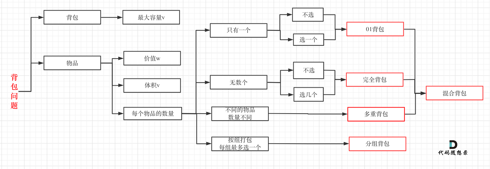

# 什么是动态规划
动态规划，英文：Dynamic Programming，简称DP，如果某一问题有很多重叠子问题，使用动态规划是最有效的。
# 什么是动态规划
动态规划，英文：Dynamic Programming，简称DP，如果某一问题有很多重叠子问题，使用动态规划是最有效的。
所以动态规划中每一个状态一定是由上一个状态推导出来的，这一点就区分于贪心，贪心没有状态推导，而是从局部直接选最优的，
动态规划的解题步骤 做动规题目的时候，很多同学会陷入一个误区，就是以为把状态转移公式背下来，照葫芦画瓢改改，就开始写代码，甚至把题目AC之后，都不太清楚dp[i]表示的是什么。
这就是一种朦胧的状态，然后就把题给过了，遇到稍稍难一点的，可能直接就不会了，然后看题解，然后继续照葫芦画瓢陷入这种恶性循环中。
状态转移公式（递推公式）是很重要，但动规不仅仅只有递推公式。
对于动态规划问题，我将拆解为如下五步曲，这五步都搞清楚了，才能说把动态规划真的掌握了！
动态规划分析問題五步曲
1. 确定dp数组（dp table）以及下标的含义
2. 确定递推公式
3. dp数组如何初始化
4. 确定遍历顺序
5. 举例推导dp数组
一些同学可能想为什么要先确定递推公式，然后在考虑初始化呢？
因为一些情况是递推公式决定了dp数组要如何初始化！
后面的讲解中我都是围绕着这五点来进行讲解。
可能刷过动态规划题目的同学可能都知道递推公式的重要性，感觉确定了递推公式这道题目就解出来了。
其实 确定递推公式 仅仅是解题里的一步而已！
一些同学知道递推公式，但搞不清楚dp数组应该如何初始化，或者正确的遍历顺序，以至于记下来公式，但写的程序怎么改都通过不了。
后序的讲解的大家就会慢慢感受到这五步的重要性了。
动态规划应该如何debug
相信动规的题目，很大部分同学都是这样做的。
看一下题解，感觉看懂了，然后照葫芦画瓢，如果能正好画对了，万事大吉，一旦要是没通过，就怎么改都通过不了，对 dp数组的初始化，递推公式，遍历顺序，处于一种黑盒的理解状态。
写动规题目，代码出问题很正常！
找问题的最好方式就是把dp数组打印出来，看看究竟是不是按照自己思路推导的！
背包問題總結
01背包
有n件物品和一个最多能背重量为w 的背包。第i件物品的重量是weight[i]，得到的价值是value[i] 。每件物品只能用一次，求解将哪些物品装入背包里物品价值总和最大。
这是标准的背包问题，以至于很多同学看了这个自然就会想到背包，甚至都不知道暴力的解法应该怎么解了。
这样其实是没有从底向上去思考，而是习惯性想到了背包，那么暴力的解法应该是怎么样的呢？
每一件物品其实只有两个状态，取或者不取，所以可以使用回溯法搜索出所有的情况，那么时间复杂度就是$o(2^n)$，这里的n表示物品数量。
所以暴力的解法是指数级别的时间复杂度。进而才需要动态规划的解法来进行优化！
二維dp數組solution
|
|
一维dp数组（滚动数组）solution
对于背包问题其实状态都是可以压缩的。
在使用二维数组的时候，递推公式：dp[i][j] = max(dp[i - 1][j], dp[i - 1][j - weight[i]] + value[i]);
其实可以发现如果把dp[i - 1]那一层拷贝到dp[i]上，表达式完全可以是：dp[i][j] = max(dp[i][j], dp[i][j - weight[i]] + value[i]);
与其把dp[i - 1]这一层拷贝到dp[i]上，不如只用一个一维数组了，只用dp[j]（一维数组，也可以理解是一个滚动数组）。
这就是滚动数组的由来，需要满足的条件是上一层可以重复利用，直接拷贝到当前层。
读到这里估计大家都忘了 dp[i][j]里的i和j表达的是什么了，i是物品，j是背包容量。
dp[i][j] 表示从下标为[0-i]的物品里任意取，放进容量为j的背包，价值总和最大是多少。
|
|
solution
|
|
完全背包
有N件物品和一个最多能背重量为W的背包。第i件物品的重量是weight[i]，得到的价值是value[i] 。每件物品都有无限个（也就是可以放入背包多次），求解将哪些物品装入背包里物品价值总和最大。
完全背包和01背包的問題區別在於，每件物品可以無限次使用
我们知道01背包内嵌的循环是从大到小遍历，为了保证每个物品仅被添加一次。
而完全背包的物品是可以添加多次的，所以要从小到大去遍历
|
|
多重背包
背包問題的五步分析都很關鍵，但確定遞推公式和遍歷順序都具有規律性，所以以下從這兩點做總結。
背包遞推公式
問能否裝滿背包（或者最多裝多少）
|
|
對應題目：
416.PartitionEqualSubsetSum 416.分割等和子集
1049.LastStoneWeight II 1049.最后一块石头的重量II
問裝滿背包有幾種方法
|
|
對應題目：
問背包裝滿最大價值
|
|
對應題目：
問裝滿背包的所需物品的最小個數
|
|
對應題目：
背包遍歷順序
01背包
在动态规划：关于01背包问题，你该了解这些！ 中我们讲解二维dp数组01背包先遍历物品还是先遍历背包都是可以的，且第二层for循环是从小到大遍历。
和动态规划：关于01背包问题，你该了解这些！（滚动数组）中，我们讲解一维dp数组01背包只能先遍历物品再遍历背包容量，且第二层for循环是从大到小遍历。
一维dp数组的背包在遍历顺序上和二维dp数组实现的01背包其实是有很大差异的，大家需要注意！
完全背包
说完01背包，再看看完全背包。
在动态规划：关于完全背包，你该了解这些！中，讲解了纯完全背包的一维dp数组实现，先遍历物品还是先遍历背包都是可以的，且第二层for循环是从小到大遍历。
但是仅仅是纯完全背包的遍历顺序是这样的，题目稍有变化，两个for循环的先后顺序就不一样了。
如果求组合数就是外层for循环遍历物品，内层for遍历背包。
如果求排列数就是外层for遍历背包，内层for循环遍历物品。
相关题目如下：
求组合数：
动态规划：518.零钱兑换II
求排列数：
动态规划：377. 组合总和 Ⅳ 、动态规划：70. 爬楼梯进阶版（完全背包）
如果求最小数，那么两层for循环的先后顺序就无所谓了，相关题目如下：
求最小数： 动态规划：322. 零钱兑换 、动态规划：279.完全平方数 对于背包问题，其实递推公式算是容易的，难是难在遍历顺序上，如果把遍历顺序搞透，才算是真正理解了。
打家劫舍
打家劫舍1
打家劫舍1 动态规划：开始打家劫舍HouseRobber 中就是给一个数组相邻之间不能连着偷，如何偷才能得到最大金钱。
1.确定dp数组含义
dp[i]：考虑下标i（包括i）以内的房屋，最多可以偷窃的金额为dp[i]。
2.确定递推公式
|
|
3.dp數組初始化
|
|
4.確定遍歷順序
從前到後遍歷
5.打印dp數組
|
|
打家劫舍II
打家劫舍II 动态规划：HouseRobberII 中就是给一个成換的数组，相邻之间不能连着偷，如何偷才能得到最大金钱。
將成環數組首尾拆開，拆分為2個數組，即轉化為打家劫舍1問題
- 考慮包含首元素，不包含尾元素
- 考慮不包含首元素，包含尾元素
- 求case1， case2二者的最大值
打家劫舍III
打家劫舍III, HouseRobberIII中就是在一个二叉树上打家劫舍，条件一样，相鄰的不能偷
树形dp
本题一定是要后序遍历，因为通过递归函数的返回值来做下一步计算。
与198.打家劫舍，213.打家劫舍II一样，关键是要讨论当前节点抢还是不抢。
如果抢了当前节点，两个孩子就不能动，如果没抢当前节点，就可以考虑抢左右孩子（注意这里说的是“考虑”）
而动态规划其实就是使用状态转移容器来记录状态的变化，这里可以使用一个长度为2的数组，记录当前节点偷与不偷所得到的的最大金钱。
这道题目算是树形dp的入门题目
買賣股票
DP Questions List
746. Min Cost Climbing Stairs 746.使用最小花费爬楼梯
96.UniqueBinarySearchTrees 96.不同的二叉搜索树
416.PartitionEqualSubsetSum 416. 分割等和子集
1049.LastStoneWeight II 1049.最后一块石头的重量II